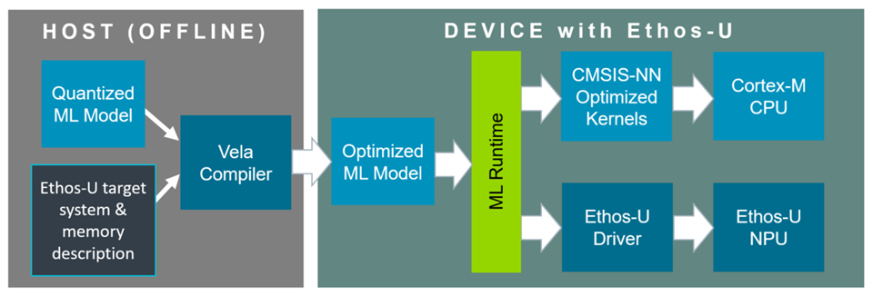
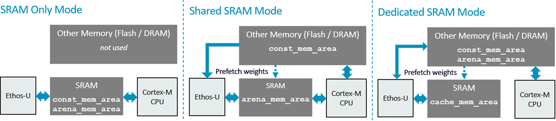

This documentation is organized as follows:
In this documentation, an Edge AI MCU combines a Cortex-M processor with an integrated Ethos-U NPU. This documentation is intended for:
A CMSIS Device Family Pack (DFP) can simplify integration by including Ethos-U resources such as the vela.ini configuration file, linker scripts, and software components. Device packs are available from www.keil.arm.com/packs. CMSIS-Toolbox uses these resources for the selected device and build context and exposes the relevant parameters through its MLOps information. See Publish Ethos-U configuration in a DFP for the relevant DFP description entries.
When a DFP contains Ethos-U resources, embedded application developers can use the validated device-specific files directly. The silicon vendor is responsible for supplying and validating the platform configuration. This includes the Vela system configuration and supported memory modes, matching NPU access settings, and the physical memory requirements. A platform maintainer can package and integrate this configuration for a board or software environment. If a suitable DFP is unavailable, this documentation also supports manual integration.
This documentation uses the following terms:
The following terms describe the Ethos-U compilation model and its memory interface:
An Ethos-U NPU is a memory-mapped accelerator controlled by Cortex-M software. The Vela compiler performs target-specific compilation before deployment. The ML inference runtime coordinates CPU operations and the parts of the model that are delegated to the NPU.

The diagram shows a common TensorFlow Lite deployment, in which CPU operations can use CMSIS-NN. Other ML inference runtimes package delegated NPU operations differently but use the same driver execution contract.
Before deployment, the model compilation flow identifies the quantized partitions that can execute on the selected Ethos-U target. Vela compiles each supported partition into a target-specific command stream and prepares its constants and memory-region layout. Operations that are not delegated remain available for execution by the ML inference runtime on the CPU.
At runtime:
A single model invocation can therefore cause more than one Ethos-U driver invocation.
The command stream is the target-specific sequence of NPU instructions generated by Vela for one delegated Ethos-U partition. Conceptually, it describes data transfers, tensor-operation configuration, execution, and result storage.
The command stream does not contain all the information needed to run independently. It refers to numbered memory regions and offsets. At runtime, the ML inference runtime and driver provide the base addresses for the regions containing constants, tensor data, and optional fast scratch storage.
Frameworks package this information differently. An optimized TensorFlow Lite model embeds it in Ethos-U custom operators, while an ExecuTorch program packages delegated command streams in its backend data. In either case, the Ethos-U driver ultimately submits a command stream and its region base addresses to the NPU.
The overall execution flow is common to Ethos-U55, Ethos-U65, and Ethos-U85, but command streams are compiled for a specific architecture and MAC configuration. Always compile for the exact target. Hardware pipelines, supported operations, memory interfaces, and configuration details are described in the corresponding Technical Reference Manual.
For command-line options and compiler diagnostics, see Vela. For invocation and interrupt contracts, see Driver.
An Edge AI MCU has a fixed Cortex-M, Ethos-U, interconnect, and memory integration. The software descriptions used to build an application must match that finished device:
A DFP can provide these related configuration artifacts, and CMSIS-Toolbox can resolve them for the selected device and build context. The artifacts must be consistent. The full mapping, examples, and consistency checklist are in Integration. The meaning and syntax of vela.ini are in Vela.
Memory configuration spans several description layers. Similar names at different layers do not refer to the same object:
| Layer | Examples | Meaning |
|---|---|---|
| Physical memory | SRAM, Flash or MRAM, DRAM | Storage implemented by the device and connected through its interconnect. |
| Vela memory type | Sram, OnChipFlash, OffChipFlash, Dram | Performance-model category used by a Vela system configuration. |
| Vela logical alias | Axi0, Axi1 | Logical memory domain used by a Vela memory mode. An alias does not necessarily represent one physical AXI port. |
| Vela data role | const_mem_area, arena_mem_area, cache_mem_area | Kind of generated model data assigned to a logical memory domain. |
| Runtime allocation | Compiled model, tensor arena, optional fast-scratch buffer | Actual linked or dynamically allocated storage used for inference. |
| Driver access configuration | NPU_QCONFIG, NPU_REGIONCFG_0..7 | NPU access route and attributes used for the command stream and base-pointer regions. |
The selected memory mode maps Vela data roles to logical aliases. The system configuration maps those aliases to Vela memory types. The linker and runtime then place the corresponding allocations in physical memory, and the driver must select matching NPU access routes. See Vela memory mode parameters for the exact configuration keys and Configure memory placement and the linker script for the end-to-end mapping.
Ethos-U uses AXI bus interfaces for DMA memory access. The memory access timing for the different data classes has a direct impact on overall performance. Vela optimizes ML model execution based on system and memory parameters in the vela.ini file.
Vela uses the logical aliases Axi0 and Axi1 to model memory placement and performance. The selected system configuration maps each alias to a Vela memory type. These aliases are compiler labels, not necessarily the names or number of physical AXI ports implemented by the NPU.
In a common Ethos-U55 integration, Axi0 represents read/write SRAM and Axi1 represents a read-only path to Flash. Do not apply that read-only restriction to the Axi1 alias on every Ethos-U target. The device integration and its vela.ini file define the actual mapping.
The following diagram compares the commonly used memory modes.

| SRAM-only mode | Shared-SRAM mode | Dedicated-SRAM mode |
|---|---|---|
| All Vela-managed model storage is placed in SRAM. Constants and the writable arena remain separate logical areas, but both use the same physical memory type. This mode provides low access latency, but the complete compiled model and arena must fit in SRAM. | The writable arena is stored in SRAM. Read-only constants, such as encoded weights and scales, are stored in Flash, MRAM, or DRAM. This arrangement minimizes SRAM usage. | Constants and the writable arena are outside the fast SRAM, normally in DRAM. SRAM is dedicated to fast staging storage. Vela uses spilling to move selected data through this area and reduce external-memory traffic. |
The diagram uses "Other Memory (Flash / DRAM)" as a compact label shared by the three examples. In Dedicated-SRAM mode, arena_mem_area requires writable memory, normally DRAM; read-only Flash can hold constants but not the arena. The common Dedicated-SRAM flow applies to Ethos-U65 and Ethos-U85. It is not a practical Ethos-U55 mode because the Ethos-U55 AXI1 hardware interface is read-only.
Vela maps to physical memory with the system-config and memory-mode options. The related performance parameters are obtained from the device-specific vela.ini file. See Vela for command-line syntax and Integration for the corresponding linker sections, MPU/SAU attributes, cache policy, and driver region configuration.
The detailed procedure and required evidence are in Integration. The Vela compiler's estimates are useful for comparison but do not replace measurements on the target.
The Technical Reference Manuals describe for each Ethos-U NPU functional behavior, interfaces, memory system, programmer's model and registers, performance, and debug features, and are intended primarily for SoC designers, system integrators, verification engineers, and low-level software developers who need hardware-specific details: